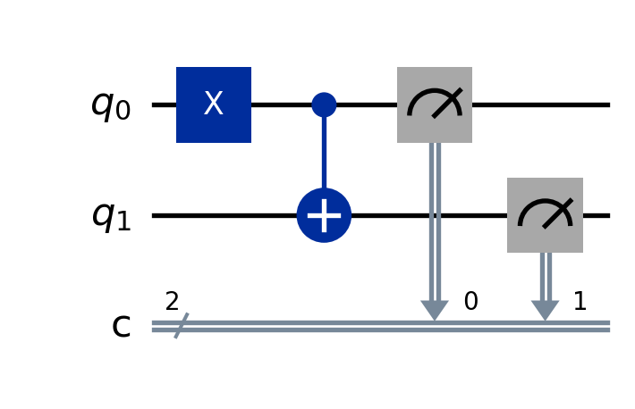
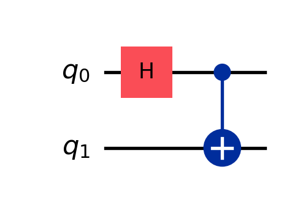
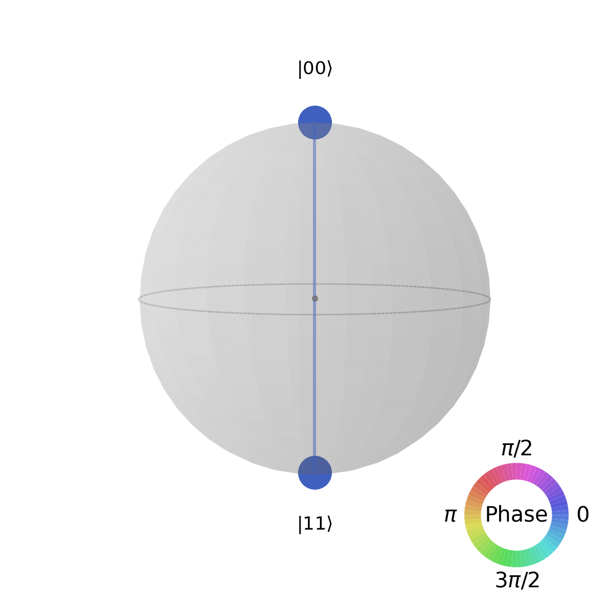
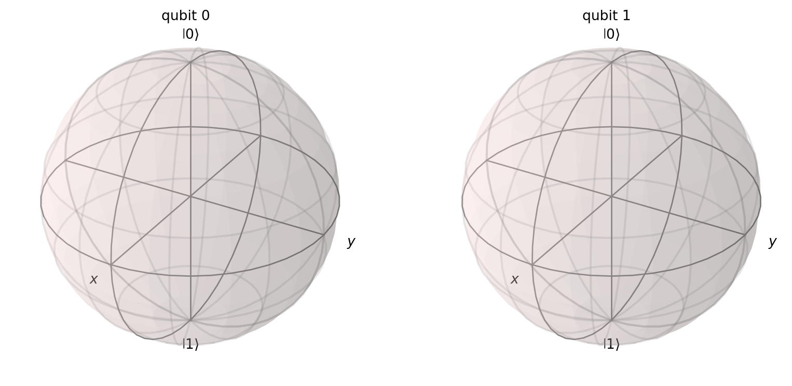
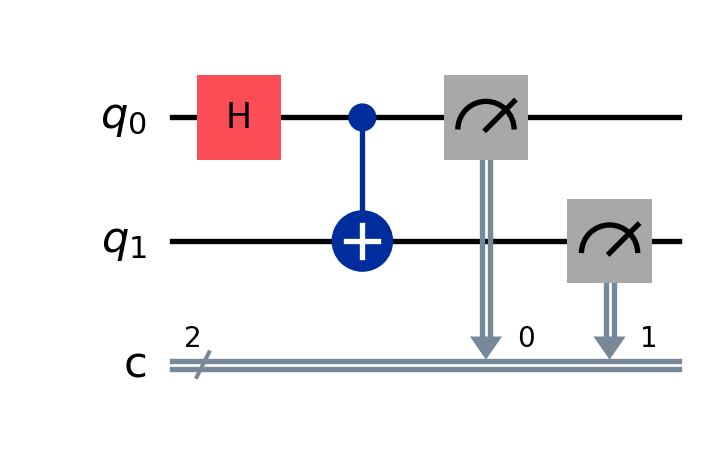
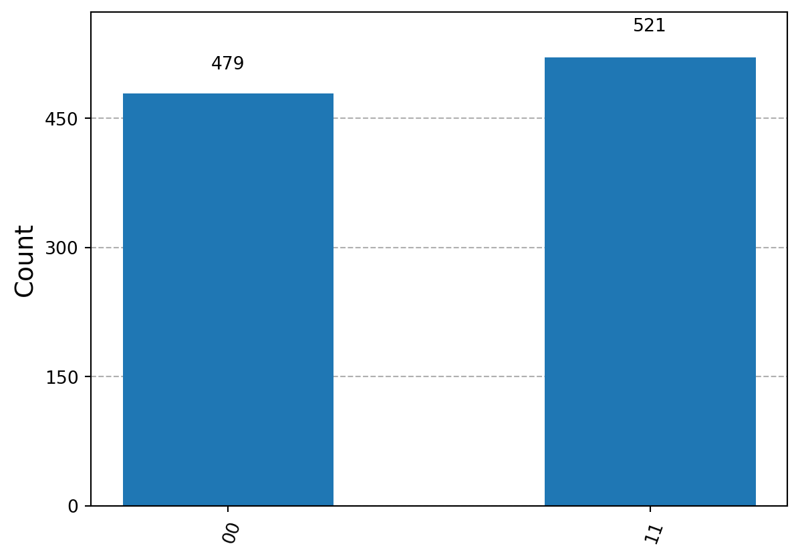
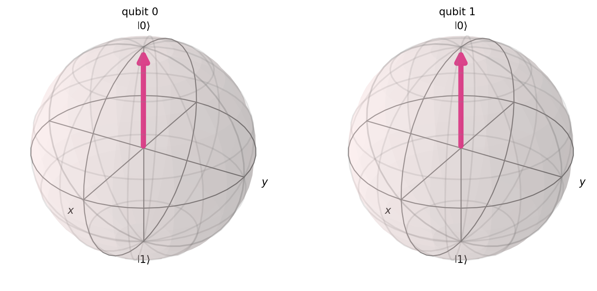
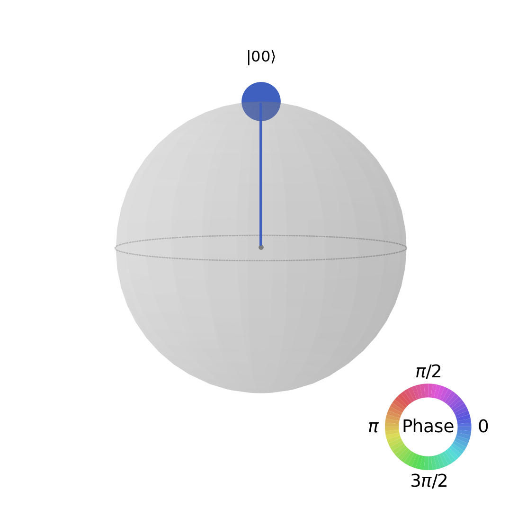
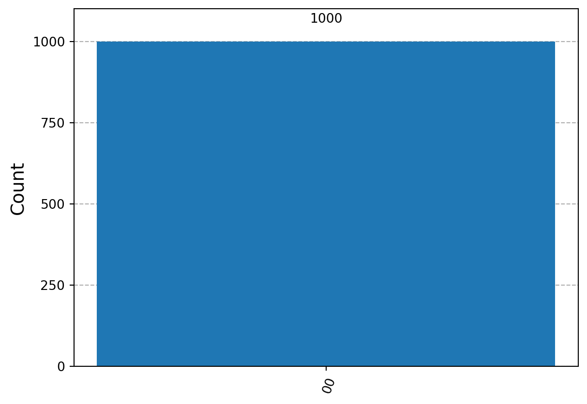

import numpy as np
from qiskit.visualization import array_to_latex
zero = [[1], [0]]
array_to_latex(array=zero, prefix='|0\\rangle = ', max_size=(10,10))\[ |0\rangle = \begin{bmatrix} 1 \\ 0 \\ \end{bmatrix} \]
Y ahora, ¿tenemos que crear nuestro propio conjunto de puertas y operaciones? Pues podría ser una buena práctica, porque el formalismo se puede reproducir con facilidad partiendo de las necesidades básicas:
Con eso podemos crear nuestro propio conjunto de funciones y objetos para simular esos cálculos.
Podríamos crear con facilidad estructuras vectoriales básicas para nuestro marco cuántico. La unidad mínima es el cúbit y, para enmarcar los posibles estados cuánticos que puede contener, necesitaríamos crear el conjunto de la base computacional \(\{|0\rangle, |1\rangle \}\).
import numpy as np
from qiskit.visualization import array_to_latex
zero = [[1], [0]]
array_to_latex(array=zero, prefix='|0\\rangle = ', max_size=(10,10))\[ |0\rangle = \begin{bmatrix} 1 \\ 0 \\ \end{bmatrix} \]
one = [[0], [1]]
array_to_latex(array=one, prefix='|1\\rangle = ', max_size=(10,10))\[ |1\rangle = \begin{bmatrix} 0 \\ 1 \\ \end{bmatrix} \]
Ahora probemos con algunas puertas.
\[ X = \left[ \begin{array}{cc} 0 & 1 \\ 1 & 0 \end{array} \right] \quad H = \frac{1}{\sqrt{2}}\left[ \begin{array}{cc} 1 & 1 \\ 1 & -1 \end{array} \right] \]
X = [[0,1],[1,0]]
array_to_latex(array=X, prefix='X = ', max_size=(10,10))\[ X = \begin{bmatrix} 0 & 1 \\ 1 & 0 \\ \end{bmatrix} \]
hadamard = np.dot((1/(np.sqrt(2))), [[1, 1], [1, -1]])
array_to_latex(array=hadamard, prefix='H = ', max_size=(10,10))\[ H = \begin{bmatrix} \frac{\sqrt{2}}{2} & \frac{\sqrt{2}}{2} \\ \frac{\sqrt{2}}{2} & - \frac{\sqrt{2}}{2} \\ \end{bmatrix} \]
Pues ya va tomando forma. Podemos comprobar si el resultado coincide con lo que esperamos.
superposition = np.dot(hadamard, zero)
array_to_latex(array=superposition, prefix='H|0\\rangle = |+\\rangle = ', max_size=(10,10))\[ H|0\rangle = |+\rangle = \begin{bmatrix} \frac{\sqrt{2}}{2} \\ \frac{\sqrt{2}}{2} \\ \end{bmatrix} \]
one = np.dot(X, zero)
array_to_latex(array=one, prefix='X|0\\rangle = |1\\rangle = ', max_size=(10,10))\[ X|0\rangle = |1\rangle = \begin{bmatrix} 0 \\ 1 \\ \end{bmatrix} \]
Podemos ampliarlo a un par de cúbits a ver qué sale. Vamos a crear uno de los estados de Bell que vimos antes.
\[ |\Phi^{+}\rangle = \frac{1}{\sqrt{2}}(|00\rangle + |11\rangle) \quad |\Phi^{-}\rangle = \frac{1}{\sqrt{2}}(|00\rangle - |11\rangle) \] \[ |\Psi^{+}\rangle = \frac{1}{\sqrt{2}}(|01\rangle + |10\rangle) \quad |\Psi^{-}\rangle = \frac{1}{\sqrt{2}}(|01\rangle - |10\rangle) \]
Para esto necesitaremos la puerta CNOT.
CNOT = [[1,0,0,0],[0,1,0,0],[0,0,0,1],[0,0,1,0]]
array_to_latex(array=CNOT, prefix='CNOT = ', max_size=(10,10))\[ CNOT = \begin{bmatrix} 1 & 0 & 0 & 0 \\ 0 & 1 & 0 & 0 \\ 0 & 0 & 0 & 1 \\ 0 & 0 & 1 & 0 \\ \end{bmatrix} \]
Con esto crearemos un sistema de dos cúbits, aplicaremos la puerta de Hadamard al primero y la puerta CNOT con el control también sobre el primer cúbit.
# Estado inicial
init_state = np.kron(zero, zero)
# (I tensor Hadamard)
HI = np.kron(hadamard, np.eye(2))Con eso podemos realizar la operación completa
\[ CNOT (I\otimes H)|00\rangle = |\Phi^{+}\rangle = \frac{1}{\sqrt{2}}(|00\rangle + |11\rangle) \]
psi_1 = np.dot(HI, init_state)
psi = np.dot(CNOT, psi_1)
array_to_latex(array=psi, prefix='|\\psi\\rangle = ', max_size=(10,10))\[ |\psi\rangle = \begin{bmatrix} \frac{\sqrt{2}}{2} \\ 0 \\ 0 \\ \frac{\sqrt{2}}{2} \\ \end{bmatrix} \]
Ahí lo tienes. Este es nuestro estado entrelazado de 2 cúbits. Construir todo el formalismo desde cero puede ser tedioso, pero nos ayuda a entender cada detalle.
Por supuesto, para seguir avanzando aprovecharemos el esfuerzo colectivo y usaremos algunas herramientas existentes que nos allanen el camino hacia la computación cuántica.
Claro que no somos los primeros con esta necesidad, así que existen algunas bibliotecas bastante útiles en este campo. QuTiP puede que sea una de las más usadas (al menos para nosotros, entusiastas de Python).
import scipy
import numpy as np
from qutip import Qobj, mesolve
from qutip import basis, tensor
from qutip.qip.operations import cnot
# Estados de la base
zero = basis(2,0)
one = basis(2,1)
# |10>
one_zero = tensor(one, zero)
# CNOT
hamiltonian = cnot().full()
# e^itH
u_generator = Qobj(1j * scipy.linalg.logm(hamiltonian), dims=[[2] * 2] * 2)
# Rango temporal 0.0 -> 1.0
times = np.arange(0, 1.1, 0.1)
# \psi = H\psi_0
evolution = mesolve(u_generator, one_zero, times)evolution.states[0]Quantum object: dims=[[2, 2], [1]], shape=(4, 1), type='ket', dtype=Dense
Qobj data =
[[0.]
[0.]
[1.]
[0.]]evolution.states[1]Quantum object: dims=[[2, 2], [1]], shape=(4, 1), type='ket', dtype=Dense
Qobj data =
[[0. +0.j ]
[0. +0.j ]
[0.97552824+0.15450855j]
[0.02447175-0.15450855j]]evolution.states[-1]Quantum object: dims=[[2, 2], [1]], shape=(4, 1), type='ket', dtype=Dense
Qobj data =
[[0.00000000e+00+0.00000000e+00j]
[0.00000000e+00+0.00000000e+00j]
[1.07316277e-06+9.88099158e-07j]
[1.00000000e+00-9.88099158e-07j]]Vayamos por pasos.
from qutip import basis, tensor
one = basis(2,1)
zero = basis(2,0)
one_zero = tensor(one, zero) # |10>
one_zeroQuantum object: dims=[[2, 2], [1]], shape=(4, 1), type='ket', dtype=Dense
Qobj data =
[[0.]
[0.]
[1.]
[0.]]from qutip.qip.operations import cnot
cnot_matrix = cnot().full()
cnot_matrixarray([[1.+0.j, 0.+0.j, 0.+0.j, 0.+0.j],
[0.+0.j, 1.+0.j, 0.+0.j, 0.+0.j],
[0.+0.j, 0.+0.j, 0.+0.j, 1.+0.j],
[0.+0.j, 0.+0.j, 1.+0.j, 0.+0.j]])De hecho, nos permite hacer más que las simples operaciones que habíamos imaginado. Por ejemplo, podríamos generar toda la evolución durante un periodo de tiempo del unitario \(U\) generado para nuestro hamiltoniano.
from qutip import identity
from qutip.qip.operations import hadamard_transform
# hamiltoniano
hamiltonian = cnot() * tensor(hadamard_transform(1), identity(2))
hamiltonianQuantum object: dims=[[2, 2], [2, 2]], shape=(4, 4), type='oper', dtype=Dense, isherm=False
Qobj data =
[[ 0.70710678 0. 0.70710678 0. ]
[ 0. 0.70710678 0. 0.70710678]
[ 0. 0.70710678 0. -0.70710678]
[ 0.70710678 0. -0.70710678 0. ]]import numpy as np
import scipy
from qutip import Qobj, mesolve
# Estado inicial
init_state = tensor(zero, zero) # |00>
# e^itH
u_generator = Qobj(1j * scipy.linalg.logm(hamiltonian.full()), dims=[[2] * 2] * 2)
# Rango temporal
times = np.arange(0, 1.1, 0.1)
evolution = mesolve(u_generator, init_state, times)evolution.states[0]Quantum object: dims=[[2, 2], [1]], shape=(4, 1), type='ket', dtype=Dense
Qobj data =
[[1.]
[0.]
[0.]
[0.]]evolution.states[1]Quantum object: dims=[[2, 2], [1]], shape=(4, 1), type='ket', dtype=Dense
Qobj data =
[[ 0.99487486+0.02262725j]
[-0.00204247+0.02262725j]
[-0.03057749-0.05462701j]
[ 0.04788161-0.05462701j]]evolution.states[-1]Quantum object: dims=[[2, 2], [1]], shape=(4, 1), type='ket', dtype=Dense
Qobj data =
[[ 7.07106734e-01-2.77290948e-08j]
[-2.74299656e-08-2.77290947e-08j]
[ 6.61796922e-08+6.69439567e-08j]
[ 7.07106828e-01+6.69439566e-08j]]psi = np.round(evolution.states[-1].full(), decimals = 5)
array_to_latex(array=psi, prefix='|\\psi\\rangle = ', max_size=(10,10))\[ |\psi\rangle = \begin{bmatrix} 0.70711 \\ 0 \\ 0 \\ 0.70711 \\ \end{bmatrix} \]
Parece \(\frac{1}{\sqrt{2}}(|00\rangle + |11\rangle)\), pero debido a imprecisiones numéricas obtendremos este tipo de estructuras feas entremedias. Tendremos que familiarizarnos con esos artefactos, porque el ruido al usar hardware producirá artefactos numéricos parecidos.
Pues bien, tener un marco teórico puede ser una buena opción para simular y hacer algo de experimentación local, pero eso pronto tocará techo cuando intentemos ampliar la escala. Nuestro dispositivo clásico no podrá realizar los cálculos de todo el sistema y puede que necesitemos pasar a ordenadores cuánticos reales que los hagan. Por tanto, necesitamos encontrar la manera de hacerlo.
Por eso algunos fabricantes han invertido tiempo y esfuerzo en crear marcos de código abierto para que los adopte la comunidad (y de paso posicionarse). Empresas como IBM o AWS han desarrollado su propia versión, que además permite enviar esos programas a un dispositivo final que realizará el conjunto de operaciones.
from qiskit import QuantumCircuit
qc = QuantumCircuit(2, 2)
qc.x(0)
qc.cx(0, 1)
qc.measure([0,1], [0,1])
qc.draw('mpl')
Qiskit es el kit de herramientas de computación cuántica de IBM que permite interactuar con sus dispositivos. Empecemos replicando la base teórica y avancemos después hasta la simulación de dispositivos.
Opflow es la sección del marco dedicada a proporcionar las piezas para realizar los cálculos anteriores.
from qiskit.quantum_info import Statevector
Zero = Statevector.from_label('0')
One = Statevector.from_label('1')probs = Zero.probabilities()
print('Probabilidad de medir 0: {}'.format(probs[0]))Probabilidad de medir 0: 1.0print('Probabilidad de medir 1: {}'.format(probs[1]))Probabilidad de medir 1: 0.0Plus = Statevector.from_label('+')
print(Plus)Statevector([0.70710678+0.j, 0.70710678+0.j],
dims=(2,))Plus.probabilities()array([0.5, 0.5])Qiskit tiende a entenderlo todo en términos de circuitos. Pero en esencia podemos pedir la operación real que se está realizando ahí y comprobar que la acción de Hadamard sobre un estado \(|0\rangle\) (el estado inicial) proporciona el estado \(|+\rangle\) como esperábamos.
array_to_latex(array=Plus.data, prefix='|+\\rangle = ', max_size=(10,10))\[ |+\rangle = \begin{bmatrix} \frac{\sqrt{2}}{2} & \frac{\sqrt{2}}{2} \\ \end{bmatrix} \]
¿Cuál sería su resultado?
probs = Plus.probabilities()
print('Probabilidad de medir 0: {}'.format(probs[0]))Probabilidad de medir 0: 0.4999999999999999Este es el resultado esperado para la operación \(\langle 0 | \psi \rangle\). Pero también podemos imitarla.
print(abs(np.dot(Zero.data, Plus.data.T)**2))0.4999999999999999Del mismo modo se pueden usar operaciones de puerta.
from qiskit.quantum_info import Pauli
X = Pauli('X')¿Y cuál es la amplitud de \(|1\rangle\) tras la operación \(X|0\rangle\)?
Zero.evolve(X) == OneTrueQiskit ordena los bits de una manera concreta, así que algunas puertas pueden parecer distintas, pero es solo cuestión del orden al aplicar las operaciones.
from qiskit.circuit.library import UnitaryGate
matrix = [[1., 0., 0., 0.],
[0., 0., 0., 1.],
[0., 0., 1., 0.],
[0., 1., 0., 0.]]
CNOT = UnitaryGate(matrix)Vamos a jugar con el estado de Bell que produjimos antes
\[ CNOT (I\otimes H)|00\rangle = |\Phi^{+}\rangle = \frac{1}{\sqrt{2}}(|00\rangle + |11\rangle) \]
print(Zero ^ Zero)Statevector([1.+0.j, 0.+0.j, 0.+0.j, 0.+0.j],
dims=(2, 2))from qiskit import QuantumCircuit
qc = QuantumCircuit(2)
qc.h(0)
qc.draw() ┌───┐
q_0: ┤ H ├
└───┘
q_1: ─────
from qiskit.quantum_info import Operator
print(Operator(qc).data)[[ 0.70710678+0.j 0.70710678+0.j 0. +0.j 0. +0.j]
[ 0.70710678+0.j -0.70710678+0.j 0. +0.j 0. +0.j]
[ 0. +0.j 0. +0.j 0.70710678+0.j 0.70710678+0.j]
[ 0. +0.j 0. +0.j 0.70710678+0.j -0.70710678+0.j]](Zero ^ Zero).evolve(qc).dataarray([ 0.70710678+0.j, 0.70710678+0.j, 0. +0.j, -0. +0.j])bell_state = (Zero ^ Zero).evolve(qc).evolve(CNOT)
bell_state.dataarray([0.70710678+0.j, 0. +0.j, 0. +0.j, 0.70710678+0.j])array_to_latex(array=bell_state.data, prefix='|\\psi\\rangle = ', max_size=(10,10))\[ |\psi\rangle = \begin{bmatrix} \frac{\sqrt{2}}{2} & 0 & 0 & \frac{\sqrt{2}}{2} \\ \end{bmatrix} \]
Por supuesto, la naturaleza basada en puertas de los dispositivos de IBM hace más natural codificar directamente nuestro enfoque como un circuito basado en puertas.
from qiskit import QuantumCircuit
qc = QuantumCircuit(2)
qc.h(0)
qc.cx(0,1)
qc.draw('mpl')
Seguramente en adelante, este enfoque pictórico facilitará la abstracción, pero es bueno saber que el formalismo sigue ahí.
print('Matemáticas:', (Zero ^ Zero).evolve(qc).probabilities())Matemáticas: [0.5 0. 0. 0.5]Por supuesto, Qiskit ofrece otras formas interesantes de simular y visualizar los resultados.
from qiskit.quantum_info import Statevector
psi = Statevector.from_instruction(qc)from qiskit.visualization import plot_state_qsphere
plot_state_qsphere(psi)
from qiskit.visualization import plot_bloch_multivector
plot_bloch_multivector(psi)
Para simular la acción real del circuito necesitaremos añadir algunos registros clásicos y operaciones de medición.
circuit = QuantumCircuit(2, 2)
circuit = circuit.compose(qc)
circuit.measure([0,1],[0,1])
circuit.draw('mpl')
from qiskit_aer import AerSimulator
# ejecutar el circuito cuántico
simulator = AerSimulator()
result = simulator.run(circuit, shots=1000).result()
counts = result.get_counts(circuit)
print(counts){'11': 521, '00': 479}from qiskit.visualization import plot_histogram
plot_histogram(counts)
¿Podríamos crear un estado que superponga todos los posibles estados de la base para una configuración de 2 cúbits?
\[ \frac{1}{2}|00\rangle + \frac{1}{2}|01\rangle + \frac{1}{2}|10\rangle + \frac{1}{2}|11\rangle \]
qc = QuantumCircuit(2)
# AQUÍ VA TU CIRCUITOpsi = Statevector.from_instruction(qc)
plot_bloch_multivector(psi)
plot_state_qsphere(psi)
circuit = QuantumCircuit(2, 2)
circuit = circuit.compose(qc)
circuit.measure([0,1],[0,1])
# ejecutar el circuito cuántico
simulator = AerSimulator()
result = simulator.run(circuit, shots=1000).result()
counts = result.get_counts(circuit)
plot_histogram(counts)